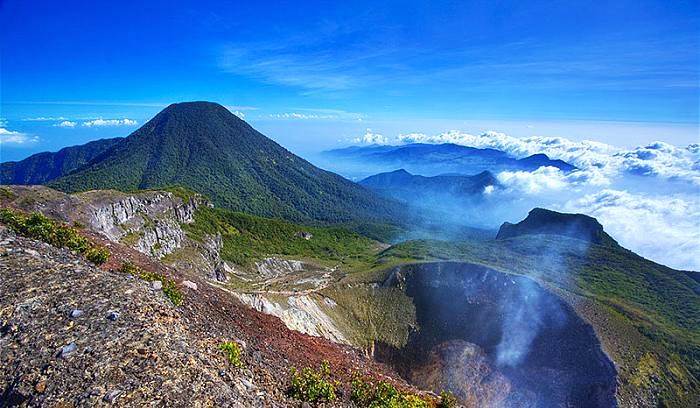

Detail Gunung Gede

Informasi Umum
Gunung Gede merupakan salah satu gunung yang populer untuk kegiatan pendakian dan pencinta alam di Jawa Barat.
| Informasi | Keterangan |
|---|---|
| Nama | Gunung Gede |
| Lokasi | Jawa Barat |
| Ketinggian | 2.958 mdpl |
| Tingkat Kesulitan | Sedang |
| Status | Terbuka |
Informasi Pendakian
- Persiapkan kondisi fisik sebelum mendaki.
- Bawa perlengkapan pendakian yang sesuai.
- Perhatikan kondisi cuaca sebelum keberangkatan.
- Jaga kebersihan dan kelestarian lingkungan.
- Ikuti aturan yang berlaku di kawasan pendakian.